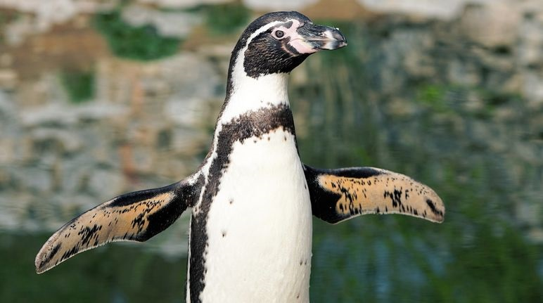
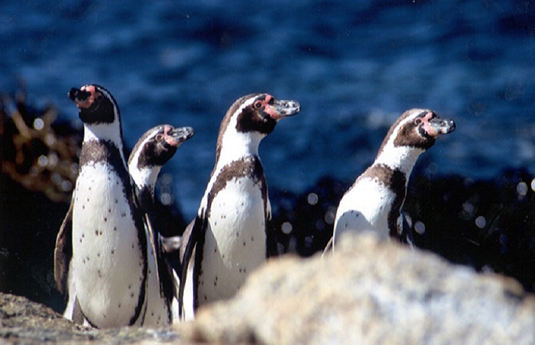

동물 보호 단체 황제펭귄 킹펭귄 아델리펭귄 훔볼트펭귄 마카로니펭귄 바위뛰기펭귄 쇠푸른펭귄 노란눈펭귄 훔볼트펭귄 길들이기가 쉬워 아쿠아리움 또는 동물원에서도 쉽게 접해볼 수 있는 중소형 펭귄입니다. 키:약 67cm 몸무게: 약 3.5kg 분포: 페루 남부에서 칠레 북부에 이르는 남아메리카 서해안 황제펭귄과 흡사하게 생겼으나, 목 부분의 무늬색이 다르며, 어린 새끼의 생김새도 다릅니다. 펭귄 중에서는 중형에 속합니다. 같은 종류인 케이프펭귄과는 눈썹에서 머리 쪽으로 난 흰 띠가 가는 것이 다르고, 마젤란펭귄과는 가슴에 검은띠가 하나(마젤란펭귄은 2개)인 것이 다릅니다. 페루 남부에서 칠레 북부의 남아메리카 서해안에 분포하며 페루해류(훔볼트해류)가 흐르는 연안의 작은 섬에 살면서 물고기를 잡아먹습니다. 바위틈이나 동굴에 간단한 둥지를 틀고 2개의 알을 낳으며, 이 배설물은 구아노라고 해서 비료로 쓰이기도 합니다. 동물원에서 많이 기르기에 주변에서 가장 쉽게 접해볼 수 있는 펭귄이기도 합니다.  
길들이기가 쉬워 아쿠아리움 또는 동물원에서도 쉽게 접해볼 수 있는 중소형 펭귄입니다.
키:약 67cm 몸무게: 약 3.5kg 분포: 페루 남부에서 칠레 북부에 이르는 남아메리카 서해안
황제펭귄과 흡사하게 생겼으나, 목 부분의 무늬색이 다르며, 어린 새끼의 생김새도 다릅니다. 펭귄 중에서는 중형에 속합니다. 같은 종류인 케이프펭귄과는 눈썹에서 머리 쪽으로 난 흰 띠가 가는 것이 다르고, 마젤란펭귄과는 가슴에 검은띠가 하나(마젤란펭귄은 2개)인 것이 다릅니다. 페루 남부에서 칠레 북부의 남아메리카 서해안에 분포하며 페루해류(훔볼트해류)가 흐르는 연안의 작은 섬에 살면서 물고기를 잡아먹습니다. 바위틈이나 동굴에 간단한 둥지를 틀고 2개의 알을 낳으며, 이 배설물은 구아노라고 해서 비료로 쓰이기도 합니다. 동물원에서 많이 기르기에 주변에서 가장 쉽게 접해볼 수 있는 펭귄이기도 합니다.